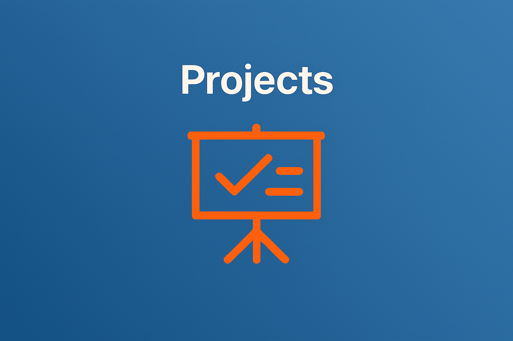

Op deze pagina vindt u een overzicht van mijn webprojecten.
Elk project is ontwikkeld met aandacht voor kwaliteit en gebruiksvriendelijkheid.
Ik heb hierbij gewerkt aan zowel functionaliteit als design.
Deze projecten geven een goed beeld van mijn vaardigheden als ontwikkelaar.
Bij het ontwikkelen van websites werk ik gestructureerd en doelgericht.
Ik begin met een duidelijk plan en zet dit om in een functioneel ontwerp.
Vervolgens werk ik dit uit met behulp van moderne webtechnologieën.
Hierbij let ik op overzicht, prestaties en gebruikservaring.
Elk project draagt bij aan mijn ontwikkeling als software developer.
Door praktijkervaring verbeter ik continu mijn technische en creatieve vaardigheden.
Ik leer van elke uitdaging en pas deze kennis toe in nieuwe projecten.
Hierdoor blijft mijn portfolio zich steeds verder ontwikkelen.
In mijn projecten streef ik naar innovatieve en creatieve oplossingen.
Ik combineer technische kennis met een oog voor modern design.
Elk project wordt met zorg uitgewerkt om een professionele uitstraling te garanderen.
Ik blijf experimenteren en nieuwe technieken toepassen om mijn werk continu te verbeteren.
Ik ben continu bezig met het ontwikkelen van nieuwe projecten om mijn portfolio verder uit te breiden.
Hierbij richt ik mij op het verbeteren van mijn technische vaardigheden en het toepassen van nieuwe technologieën.
Toekomstige projecten zullen zich meer richten op interactiviteit en gebruikservaring.
Blijf deze pagina volgen om mijn nieuwste werk te ontdekken.